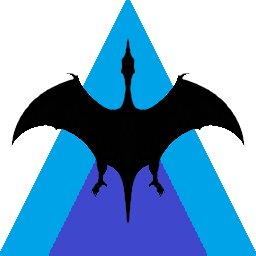

Pteropilot Pro
一次购买，终身使用——标准版 + Lite，管好你的游戏服务器。
面向 Pterodactyl / Pelican 面板的 Windows 客户端：图形化管理界面、内置 AI 助手、自动备份、云同步与自动更新。开源版（MCP server）继续免费。
- 版本
- v0.1.0
- 授权
- 终身买断
- 平台
- Windows 10/11
- 设备
- 最多 2 台 · 可解绑
功能
一套授权，两个版本
标准版（桌面安装版）
安装程序，桌面快捷方式，常驻后台管理。
Lite（便携版）
免安装，单文件直接运行，U 盘可用。
终身授权
一次买断，无订阅续费；两个版本同时获得。
7 天全功能试用
先体验再买；试用到期自动降级为只读。
最多 2 台设备
桌面 + 笔记本；换电脑可一键解绑旧设备。
自动更新 · 云同步
内置更新检查；配置可选云同步备份（可选）。
怎么选
开源版 vs Pro
开源版免费、给会配 AI 客户端的人；Pro 是给「想点点鼠标就管服务器」的人的图形客户端。
| 对比项 | 开源版（免费） | Pro（¥59.99 终身） |
|---|---|---|
| 形态 | MCP server（在 Claude / Cursor 里用） | Windows 桌面客户端（图形界面） |
| 需要 AI 客户端 | 需要（装 Claude / Cursor 并配 JSON） | 不需要，内置 AI 助手（自己填 API key） |
| 能力覆盖 | 43 个 MCP 工具（状态/电源/文件/备份/玩家/数据库/审计/定时任务…） | 图形界面全套 + 17 个 AI 工具 |
| 崩服告警 | webhook / 邮件，需自己配 cron 或计划任务 | 内置轮询：界面提示 + 可选 webhook 推送，一键测试 |
| 安装门槛 | Python 环境 + 改配置 | 下载即用（标准版 / Lite 便携版） |
| 云同步 · 自动更新 | 无 | 有（配置备份、版本提示） |
FAQ
常见问题
Pro 和开源版有什么区别？
开源版是 MCP server（让 AI 助手管理面板），免费开源、MIT 协议；Pro 是图形化 Windows 客户端（标准版 + Lite），商业闭源（EULA 授权，不是 MIT），带面板管理界面、内置 AI 助手、自动备份、云同步与自动更新。开源版不受影响，继续免费。
需要自己先装面板吗？
不需要。Pro 连接你已经运行中的 Pterodactyl / Pelican 面板，只需要面板地址和 API Key。
试用期多久？
首次打开界面起 7 天全功能试用；到期未激活自动降级为只读（可查看，不可操作）。
一个激活码能用几台电脑？
最多 2 台（如你自己的台式机 + 笔记本）。换电脑时在旧设备上点「解绑本设备」，即可在新设备激活。
支持退款吗？
购买后 7 天内可申请退款（与软件描述严重不符或无法正常使用），退款后激活码作废。
国内怎么买？海外呢？
国内：面包多商店下单，付款后自动收到激活码；也可直接联系购买。海外：支付渠道即将开放。